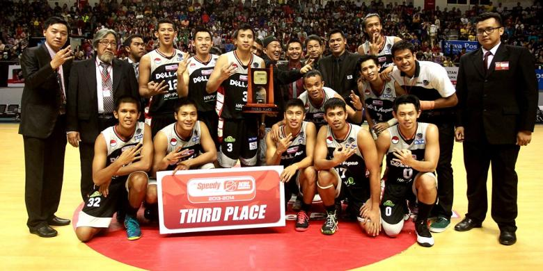

|  | |||
| Inilah potret anggota club ini | Persaingan yang cukup ketat antara Aspac dengan Satria Muda BriTama Indonesia | Raut kebahagiaan terpancar saat mereka memenangkan turnamen | Potret kemenangan club basket Aspac |
Club ini berasal dari Jakarta berdiri pada tahun 1986.Sejak 1987,Aspac selalu menyumbang atlet timnas Indonesia di pentas kompetisi basket tertinggi.Para pemain itu antara lain Nyoo Lie Fan,Fillix Bendatu,Suko Daryono,Fictor G.Roring,Tri Adnjanaadi,Lokatanaya,Ferry Kurniawan,Ompung Radja,AF Rinaldo,Cokorda Raka,Riko HANTONO,Andhi Batam,Mario Wusyang.Mereka bersaing cukup ketat hampir disepanjang laga,JNE Bandung Utama gagal menghentikan Aspac Jakarta.Cemerlangnya smallmen Aspac membuat Bandung utama dipaksa tunduk pada kedudukan 59-48.Walau demikian ini adalah skor terendah dalam kemenangan-kemenangan Aspac sejauh musim ini.